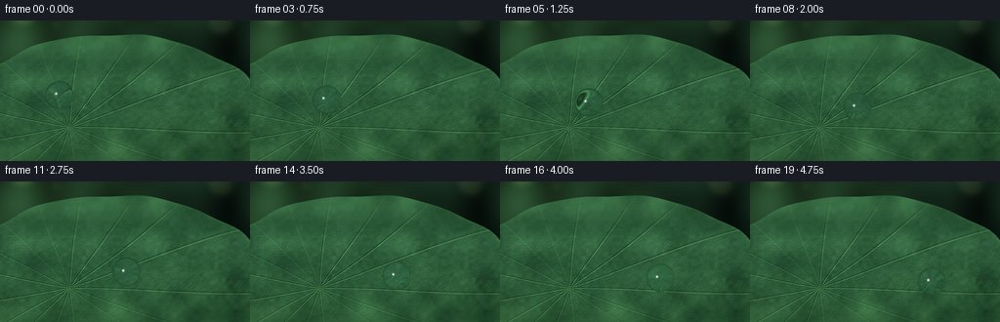
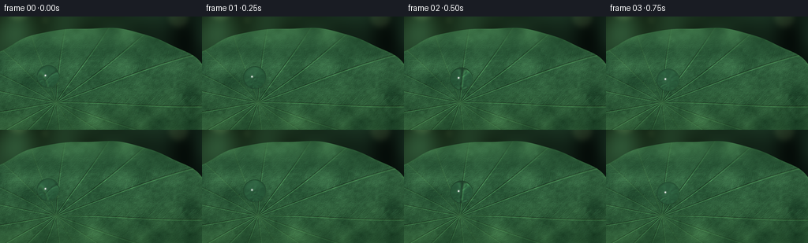

CODING AGENTS AS PIXEL WORLD MODELS
traex/GPT-6.1-Sol · phygen_036
点击播放 · 原生 RGB 像素
逐轮保存的候选
回放视频、检查图与代码变化。
每份候选均可单独播放。实际图片检查记录在下方工具轨迹中。
候选 01播放与检查图
点击播放 · 原生 RGB 像素


展开代码变化
--- 上一保存版本
+++ 本次保存版本
@@ -0,0 +1,237 @@
+"""Text-only procedural macro photograph animation of water on a lotus leaf.
+All geometry, botanical texture, and water optics are generated locally.
+"""
+from pathlib import Path
+import json
+import numpy as np
+from PIL import Image, ImageDraw
+from scipy.ndimage import gaussian_filter, map_coordinates
+import artifact_io
+
+ROOT = Path(__file__).resolve().parent
+SPEC = json.loads((ROOT / 'task_spec.json').read_text())
+S = 4
+W, H = SPEC['width'], SPEC['height']
+RNG = np.random.default_rng(36036)
+ELEV = np.deg2rad(53)
+SIN, COS = np.sin(ELEV), np.cos(ELEV)
+D = np.array([0., COS, -SIN])
+
+
+def noise(shape, size, sigma=0):
+ a = RNG.normal(0, 1, (size[1], size[0])).astype(np.float32)
+ p = Image.fromarray(a, 'F').resize((shape[1], shape[0]), Image.Resampling.BICUBIC)
+ b = np.array(p)
+ if sigma:
+ b = gaussian_filter(b, sigma)
+ return b
+
+
+def make_scene():
+ # A padded, high-resolution botanical surface is also the refraction source.
+ pad = 56
+ tw, th = (W+2*pad)*S, (H+2*pad)*S
+ yy, xx = np.mgrid[:th, :tw].astype(np.float32)
+ x, y = xx/S-pad, yy/S-pad
+ dx, dy = x-71, (y-109)/SIN
+ rho = np.sqrt(dx*dx+dy*dy+1e-5)
+ theta = np.arctan2(dy, dx)
+ coarse = noise((th, tw), (18, 14))
+ medium = noise((th, tw), (95, 70))
+ fine = noise((th, tw), (370, 260))
+ micro = noise((th, tw), (900, 650))
+ # Raised, curved radial bundles typical of the peltate lotus leaf.
+ major = np.zeros_like(x)
+ rimshadow = np.zeros_like(x)
+ for k in range(17):
+ angle = 2*np.pi*k/17 + 0.025*np.sin(k*2.3)
+ curve = angle + 0.045*np.sin(rho/83 + k*1.4)*(1-np.exp(-rho/33))
+ dist = rho*np.abs(np.sin(theta-curve))
+ front = np.cos(theta-curve)>0
+ ridge = np.exp(-(dist/(0.48+rho*.0036))**2)*front
+ major = np.maximum(major, ridge)
+ rimshadow = np.maximum(rimshadow, np.exp(-(dist/(1.7+rho*.004))**2)*front)
+ # Fine branchlets join the radial bundles. A relief map makes these real
+ # surface contours, rather than flat ornamental line work.
+ lines = Image.new('L', (tw, th), 0)
+ draw = ImageDraw.Draw(lines)
+ def pt(a,b): return ((a+pad)*S,(b+pad)*S)
+ for k in range(17):
+ angle = 2*np.pi*k/17 + 0.025*np.sin(k*2.3)
+ for r in np.arange(20, 234, 9.4):
+ a = angle + .045*np.sin(r/83+k*1.4)*(1-np.exp(-r/33))
+ for side in [-1,1]:
+ length = r*.13 + 2
+ start = np.array([71+r*np.cos(a),109+SIN*r*np.sin(a)])
+ ba = a+side*.93
+ tip = start+np.array([length*np.cos(ba),SIN*length*np.sin(ba)])
+ control = .55*start+.45*tip + np.array([np.cos(a),SIN*np.sin(a)])*1.1
+ pts = []
+ for t in np.linspace(0,1,9):
+ p = (1-t)**2*start+2*t*(1-t)*control+t*t*tip
+ pts.append(pt(*p))
+ draw.line(pts, fill=110+int(35*RNG.random()), width=2)
+ branches = gaussian_filter(np.asarray(lines).astype(np.float32)/255, .7)
+ # Minute wax papillae, a subtle granulated, water-repellent surface.
+ height = .47*major-.09*rimshadow+.25*branches+.033*fine+.013*micro+.045*medium
+ hy, hx = np.gradient(height, 1/S, 1/S)
+ lighting = np.clip(.87-.43*hx-.65*hy, .47, 1.35)
+ broadlight = np.exp(-((x-85)/210)**2-((y-27)/190)**2)
+ col = np.stack([43+7*coarse+2.8*medium, 91+10*coarse+4*medium, 53+6*coarse+3*medium],axis=-1)
+ col += broadlight[...,None]*np.array([12,20,14])
+ col += (major*.55 + branches*.4)[...,None]*np.array([17,19,6])
+ col += fine[...,None]*np.array([1.4,2.2,1.6])
+ col *= lighting[...,None]
+ # Directional, soft sheen from the bluish-green waxy surface.
+ sheen = 4*np.exp(-((y-65)/55)**2) * (1+.18*coarse)
+ col += sheen[...,None]*np.array([.6,1.,1.5])
+ col = np.clip(col,0,255).astype(np.float32)
+ # Oval lotus blade, lightly undulating around its un-serrated rim.
+ a = (x-116)/161
+ b = (y-108)/94
+ ang = np.arctan2(b,a)
+ boundary = 1 + .011*np.sin(ang*9+.7)+.005*np.sin(ang*17)
+ radial = np.sqrt(a*a+b*b)
+ leafmask = np.clip((boundary-radial)*S*70+.5,0,1)
+ edge = np.exp(-((radial-boundary+.006)/.007)**2)
+ col += edge[...,None]*np.array([8,14,4])
+ # Focus falls away smoothly before and behind the subject's glide plane.
+ soft = gaussian_filter(col, (2.3*S,2.3*S,0))
+ defocus = np.clip((np.abs(y-89)-16)/58,0,.90)
+ defocus = defocus**1.5
+ focused = col*(1-defocus[...,None])+soft*defocus[...,None]
+ backnoise = noise((th,tw),(12,8))
+ bg = np.stack([16+7*backnoise,33+13*backnoise,24+9*backnoise],axis=-1)
+ bg += np.exp(-((x-19)/160)**2-((y-5)/110)**2)[...,None]*np.array([12,19,6])
+ # Far-off pond-side foliage catches circles of diffuse sunlight.
+ for cx,cy,rad,alpha in [(23,-9,14,.28),(226,1,13,.24),(184,-29,19,.18),(268,29,8,.17),(57,4,5,.10)]:
+ bokeh = np.exp(-((np.sqrt((x-cx)**2+(y-cy)**2)/rad)**6))
+ bokeh = gaussian_filter(bokeh,2.3*S)
+ bg += bokeh[...,None]*np.array([89,102,62])*alpha
+ combined = focused*leafmask[...,None]+bg*(1-leafmask[...,None])
+ return combined[pad*S:(pad+H)*S,pad*S:(pad+W)*S], col, pad
+
+
+def environment(v):
+ # A natural environment: bright sky above, darker green canopy below.
+ z = v[...,2]
+ sky = np.clip((z+.10)/.85,0,1)
+ colour = np.array([21.,44.,28.]) + sky[...,None]*np.array([131.,153.,174.])
+ haze = np.exp(-((z-.30)/.3)**2)
+ colour += haze[...,None]*np.array([13,14,8])
+ leaves = .5+.5*np.sin(v[...,0]*10+v[...,1]*5)*np.sin(v[...,1]*13-v[...,2]*8)
+ colour *= (1-.15*leaves*(1-sky))[...,None]
+ # Broad luminous opening in the canopy, reflected as a pearl-white glint.
+ light = np.array([-.47,-.40,.786]); light /= np.linalg.norm(light)
+ dot = np.clip(np.sum(v*light,axis=-1),-1,1)
+ opening = np.exp(-((1-dot)/.038)**2)
+ colour = colour*(1-opening[...,None]*.84)+np.array([252,255,253])*opening[...,None]*.84
+ hot = np.exp(-((1-dot)/.0055)**2)
+ colour = colour*(1-hot[...,None]) + np.array([255,255,255])*hot[...,None]
+ return colour
+
+
+def refract(incident, normal, ratio):
+ co = -np.sum(incident*normal,axis=-1)
+ disc = np.maximum(1-ratio*ratio*(1-co*co),0)
+ return ratio*incident+(ratio*co-np.sqrt(disc))[...,None]*normal
+
+
+def render_frame(base, texture, pad, t):
+ # A superhydrophobic bead moves without flattening or leaving a wet trail.
+ # Its mild acceleration and gentle lateral curve follow the sloping blade.
+ p = .88*t+.12*t*t
+ gx = 61+125*p
+ gy = 84+26*p + 2.1*np.sin(np.pi*p)
+ radius = 14.35*(1+.005*np.sin(t*4*np.pi))
+ centre = np.array([gx-W/2,(H/2-gy)/SIN,.91*radius])
+ cy = gy-COS*centre[2]
+ im = base.copy()
+ left = max(0,int((gx-radius-14)*S))
+ right = min(W*S,int((gx+radius+18)*S)+1)
+ top = max(0,int((cy-radius-7)*S))
+ bottom = min(H*S,int((gy+12)*S)+1)
+ yy,xx = np.mgrid[top:bottom,left:right].astype(np.float64)
+ px, py = (xx+.5)/S,(yy+.5)/S
+ region = im[top:bottom,left:right]
+ # Broad transmitted shadow, tiny footprint, and focused refracted sunlight.
+ broad = np.exp(-(((px-gx-3.1)/11.5)**2+((py-gy-1.6)/4.7)**2)*1.7)
+ contact = np.exp(-(((px-gx)/4.7)**2+((py-gy)/1.15)**2)*1.7)
+ region *= (1-.19*broad-.24*contact)[...,None]
+ caustic = np.exp(-(((px-gx-5.4)/6.2)**2+((py-gy-1.1)/2.0)**2)*1.5)
+ region += caustic[...,None]*np.array([22.,32.,9.])
+ sx = px-W/2
+ sy = H/2-py
+ origin = np.stack([sx,sy*SIN-500*COS,sy*COS+500*SIN],axis=-1)
+ oc = origin-centre
+ b = np.sum(oc*D,axis=-1)
+ c = np.sum(oc*oc,axis=-1)-radius*radius
+ disc = b*b-c
+ hit = disc>0
+ distance = -b-np.sqrt(np.maximum(disc,0))
+ point = origin+distance[...,None]*D
+ hit &= point[...,2]>=0
+ normal = (point-centre)/radius
+ normal /= np.maximum(np.linalg.norm(normal,axis=-1,keepdims=True),1e-9)
+ nwater = 1.333
+ inside = refract(np.broadcast_to(D,normal.shape),normal,1/nwater)
+ ip = point+inside*1e-4
+ ic = ip-centre
+ # Second intersection of the same sphere, then Snell's law on exit.
+ b2 = np.sum(ic*inside,axis=-1)
+ c2 = np.sum(ic*ic,axis=-1)-radius*radius
+ through = -b2+np.sqrt(np.maximum(b2*b2-c2,0))
+ exitpoint = ip+through[...,None]*inside
+ exitnormal = (exitpoint-centre)/radius
+ exitnormal /= np.maximum(np.linalg.norm(exitnormal,axis=-1,keepdims=True),1e-9)
+ outgoing = refract(inside,-exitnormal,nwater)
+ plane_t = -exitpoint[...,2]/np.minimum(outgoing[...,2],-1e-6)
+ target = exitpoint+outgoing*plane_t[...,None]
+ # The tiny cap in direct contact with the leaf transmits into that surface.
+ cuts_plane = exitpoint[...,2]<0
+ it = -ip[...,2]/np.minimum(inside[...,2],-1e-6)
+ target_base = ip+inside*it[...,None]
+ target = np.where(cuts_plane[...,None],target_base,target)
+ tx = target[...,0]+W/2
+ ty = H/2-target[...,1]*SIN
+ coords = np.array([(ty+pad)*S,(tx+pad)*S])
+ trans = np.stack([map_coordinates(texture[...,i],coords,order=1,mode='nearest') for i in range(3)],axis=-1)
+ # Minimal water absorption retains green leaf veins and magnifies them.
+ trans = trans*np.array([.94,.985,.98])+np.array([0.5,1.8,2.9])
+ reflection = D-2*np.sum(D*normal,axis=-1)[...,None]*normal
+ env = environment(reflection)
+ cosine = np.clip(-np.sum(D*normal,axis=-1),0,1)
+ fresnel = .02037+.97963*(1-cosine)**5
+ bead = trans*(1-fresnel[...,None])+env*fresnel[...,None]
+ # Both interfaces reflect the brightest portion of the broad sky opening.
+ lamp = np.array([-.47,-.40,.786]); lamp/=np.linalg.norm(lamp)
+ refl_light = np.clip(np.sum(reflection*lamp,axis=-1),-1,1)
+ glint = .88*np.exp(-((1-refl_light)/.010)**2)
+ glint += .20*np.exp(-((1-refl_light)/.037)**2)
+ glint = np.clip(glint,0,.99)
+ bead = bead*(1-glint[...,None])+np.array([255.,255.,253.])*glint[...,None]
+ # A small opposing internal gleam gives the sphere's far surface depth.
+ lower_arc = np.exp(-((cosine-.26)/.075)**2)*np.clip(normal[...,0]*.5-normal[...,2]*.45,0,1)
+ bead += lower_arc[...,None]*np.array([18,25,20])
+ region[:] = np.where(hit[...,None],bead,region)
+ # Mild photographic edge falloff, applied equally to leaf and bead.
+ return im
+
+
+def main():
+ base, texture, pad = make_scene()
+ yy,xx = np.mgrid[:H*S,:W*S]
+ vignette = 1-.11*(((xx/S-W*.49)/(W*.8))**2+((yy/S-H*.46)/(H*.85))**2)
+ frames=[]
+ for i in range(SPEC['frames']):
+ frame = render_frame(base,texture,pad,i/(SPEC['frames']-1))
+ frame *= vignette[...,None]
+ image = Image.fromarray(np.clip(frame,0,255).astype(np.uint8),'RGB')
+ image = image.resize((W,H),Image.Resampling.LANCZOS)
+ frames.append(np.array(image))
+ frames = np.stack(frames)
+ artifact_io.save(frames,ROOT)
+ print('Saved',frames.shape,frames.dtype,'RGB frames at',SPEC['fps'],'fps')
+
+if __name__=='__main__':
+ main()
可观测工具轨迹
实际执行的命令与返回图片。
命令 1exit 0
/bin/bash -lc 'ls -la && cat prompt.txt && cat GENERATION_RULES.md && cat task_spec.json'
命令 2exit 0
/bin/bash -lc "cat artifact_io.py && cat player_template.html | head -35 && python - <<'PY' import importlib.util for m in ['numpy','PIL','scipy']: print(m, bool(importlib.util.find_spec(m))) PY"
命令 3exit 0
/bin/bash -lc "cat > generate.py <<'PY'
\"\"\"Text-only procedural macro photograph animation of water on a lotus leaf.
All geometry, botanical texture, and water optics are generated locally.
\"\"\"
from pathlib import Path
import json
import numpy as np
from PIL import Image, ImageDraw
from scipy.ndimage import gaussian_filter, map_coordinates
import artifact_io
ROOT = Path(__file__).resolve().parent
SPEC = json.loads((ROOT / 'task_spec.json').read_text())
S = 4
W, H = SPEC['width'], SPEC['height']
RNG = np.random.default_rng(36036)
ELEV = np.deg2rad(53)
SIN, COS = np.sin(ELEV), np.cos(ELEV)
D = np.array([0., COS, -SIN])
def noise(shape, size, sigma=0):
a = RNG.normal(0, 1, (size[1], size[0])).astype(np.float32)
p = Image.fromarray(a, 'F').resize((shape[1], shape[0]), Image.Resampling.BICUBIC)
b = np.array(p)
if sigma:
b = gaussian_filter(b, sigma)
return b
def make_scene():
# A padded, high-resolution botanical surface is also the refraction source.
pad = 56
tw, th = (W+2*pad)*S, (H+2*pad)*S
yy, xx = np.mgrid[:th, :tw].astype(np.float32)
x, y = xx/S-pad, yy/S-pad
dx, dy = x-71, (y-109)/SIN
rho = np.sqrt(dx*dx+dy*dy+1e-5)
theta = np.arctan2(dy, dx)
coarse = noise((th, tw), (18, 14))
medium = noise((th, tw), (95, 70))
fine = noise((th, tw), (370, 260))
micro = noise((th, tw), (900, 650))
# Raised, curved radial bundles typical of the peltate lotus leaf.
major = np.zeros_like(x)
rimshadow = np.zeros_like(x)
for k in range(17):
angle = 2*np.pi*k/17 + 0.025*np.sin(k*2.3)
curve = angle + 0.045*np.sin(rho/83 + k*1.4)*(1-np.exp(-rho/33))
dist = rho*np.abs(np.sin(theta-curve))
front = np.cos(theta-curve)>0
ridge = np.exp(-(dist/(0.48+rho*.0036))**2)*front
major = np.maximum(major, ridge)
rimshadow = np.maximum(rimshadow, np.exp(-(dist/(1.7+rho*.004))**2)*front)
# Fine branchlets join the radial bundles. A relief map makes these real
# surface contours, rather than flat ornamental line work.
lines = Image.new('L', (tw, th), 0)
draw = ImageDraw.Draw(lines)
def pt(a,b): return ((a+pad)*S,(b+pad)*S)
for k in range(17):
angle = 2*np.pi*k/17 + 0.025*np.sin(k*2.3)
for r in np.arange(20, 234, 9.4):
a = angle + .045*np.sin(r/83+k*1.4)*(1-np.exp(-r/33))
for side in [-1,1]:
length = r*.13 + 2
start = np.array([71+r*np.cos(a),109+SIN*r*np.sin(a)])
ba = a+side*.93
tip = start+np.array([length*np.cos(ba),SIN*length*np.sin(ba)])
control = .55*start+.45*tip + np.array([np.cos(a),SIN*np.sin(a)])*1.1
pts = []
for t in np.linspace(0,1,9):
p = (1-t)**2*start+2*t*(1-t)*control+t*t*tip
pts.append(pt(*p))
draw.line(pts, fill=110+int(35*RNG.random()), width=2)
branches = gaussian_filter(np.asarray(lines).astype(np.float32)/255, .7)
# Minute wax papillae, a subtle granulated, water-repellent surface.
height = .47*major-.09*rimshadow+.25*branches+.033*fine+.013*micro+.045*medium
hy, hx = np.gradient(height, 1/S, 1/S)
lighting = np.clip(.87-.43*hx-.65*hy, .47, 1.35)
broadlight = np.exp(-((x-85)/210)**2-((y-27)/190)**2)
col = np.stack([43+7*coarse+2.8*medium, 91+10*coarse+4*medium, 53+6*coarse+3*medium],axis=-1)
col += broadlight[...,None]*np.array([12,20,14])
col += (major*.55 + branches*.4)[...,None]*np.array([17,19,6])
col += fine[...,None]*np.array([1.4,2.2,1.6])
col *= lighting[...,None]
# Directional, soft sheen from the bluish-green waxy surface.
sheen = 4*np.exp(-((y-65)/55)**2) * (1+.18*coarse)
col += sheen[...,None]*np.array([.6,1.,1.5])
col = np.clip(col,0,255).astype(np.float32)
# Oval lotus blade, lightly undulating around its un-serrated rim.
a = (x-116)/161
b = (y-108)/94
ang = np.arctan2(b,a)
boundary = 1 + .011*np.sin(ang*9+.7)+.005*np.sin(ang*17)
radial = np.sqrt(a*a+b*b)
leafmask = np.clip((boundary-radial)*S*70+.5,0,1)
edge = np.exp(-((radial-boundary+.006)/.007)**2)
col += edge[...,None]*np.array([8,14,4])
# Focus falls away smoothly before and behind the subject's glide plane.
soft = gaussian_filter(col, (2.3*S,2.3*S,0))
defocus = np.clip((np.abs(y-89)-16)/58,0,.90)
defocus = defocus**1.5
focused = col*(1-defocus[...,None])+soft*defocus[...,None]
backnoise = noise((th,tw),(12,8))
bg = np.stack([16+7*backnoise,33+13*backnoise,24+9*backnoise],axis=-1)
bg += np.exp(-((x-19)/160)**2-((y-5)/110)**2)[...,None]*np.array([12,19,6])
# Far-off pond-side foliage catches circles of diffuse sunlight.
for cx,cy,rad,alpha in [(23,-9,14,.28),(226,1,13,.24),(184,-29,19,.18),(268,29,8,.17),(57,4,5,.10)]:
bokeh = np.exp(-((np.sqrt((x-cx)**2+(y-cy)**2)/rad)**6))
bokeh = gaussian_filter(bokeh,2.3*S)
bg += bokeh[...,None]*np.array([89,102,62])*alpha
combined = focused*leafmask[...,None]+bg*(1-leafmask[...,None])
return combined[pad*S:(pad+H)*S,pad*S:(pad+W)*S], col, pad
def environment(v):
# A natural environment: bright sky above, darker green canopy below.
z = v[...,2]
sky = np.clip((z+.10)/.85,0,1)
colour = np.array([21.,44.,28.]) + sky[...,None]*np.array([131.,153.,174.])
haze = np.exp(-((z-.30)/.3)**2)
colour += haze[...,None]*np.array([13,14,8])
leaves = .5+.5*np.sin(v[...,0]*10+v[...,1]*5)*np.sin(v[...,1]*13-v[...,2]*8)
colour *= (1-.15*leaves*(1-sky))[...,None]
# Broad luminous opening in the canopy, reflected as a pearl-white glint.
light = np.array([-.47,-.40,.786]); light /= np.linalg.norm(light)
dot = np.clip(np.sum(v*light,axis=-1),-1,1)
opening = np.exp(-((1-dot)/.038)**2)
colour = colour*(1-opening[...,None]*.84)+np.array([252,255,253])*opening[...,None]*.84
hot = np.exp(-((1-dot)/.0055)**2)
colour = colour*(1-hot[...,None]) + np.array([255,255,255])*hot[...,None]
return colour
def refract(incident, normal, ratio):
co = -np.sum(incident*normal,axis=-1)
disc = np.maximum(1-ratio*ratio*(1-co*co),0)
return ratio*incident+(ratio*co-np.sqrt(disc))[...,None]*normal
def render_frame(base, texture, pad, t):
# A superhydrophobic bead moves without flattening or leaving a wet trail.
# Its mild acceleration and gentle lateral curve follow the sloping blade.
p = .88*t+.12*t*t
gx = 61+125*p
gy = 84+26*p + 2.1*np.sin(np.pi*p)
radius = 14.35*(1+.005*np.sin(t*4*np.pi))
centre = np.array([gx-W/2,(H/2-gy)/SIN,.91*radius])
cy = gy-COS*centre[2]
im = base.copy()
left = max(0,int((gx-radius-14)*S))
right = min(W*S,int((gx+radius+18)*S)+1)
top = max(0,int((cy-radius-7)*S))
bottom = min(H*S,int((gy+12)*S)+1)
yy,xx = np.mgrid[top:bottom,left:right].astype(np.float64)
px, py = (xx+.5)/S,(yy+.5)/S
region = im[top:bottom,left:right]
# Broad transmitted shadow, tiny footprint, and focused refracted sunlight.
broad = np.exp(-(((px-gx-3.1)/11.5)**2+((py-gy-1.6)/4.7)**2)*1.7)
contact = np.exp(-(((px-gx)/4.7)**2+((py-gy)/1.15)**2)*1.7)
region *= (1-.19*broad-.24*contact)[...,None]
caustic = np.exp(-(((px-gx-5.4)/6.2)**2+((py-gy-1.1)/2.0)**2)*1.5)
region += caustic[...,None]*np.array([22.,32.,9.])
sx = px-W/2
sy = H/2-py
origin = np.stack([sx,sy*SIN-500*COS,sy*COS+500*SIN],axis=-1)
oc = origin-centre
b = np.sum(oc*D,axis=-1)
c = np.sum(oc*oc,axis=-1)-radius*radius
disc = b*b-c
hit = disc>0
distance = -b-np.sqrt(np.maximum(disc,0))
point = origin+distance[...,None]*D
hit &= point[...,2]>=0
normal = (point-centre)/radius
normal /= np.maximum(np.linalg.norm(normal,axis=-1,keepdims=True),1e-9)
nwater = 1.333
inside = refract(np.broadcast_to(D,normal.shape),normal,1/nwater)
ip = point+inside*1e-4
ic = ip-centre
# Second intersection of the same sphere, then Snell's law on exit.
b2 = np.sum(ic*inside,axis=-1)
c2 = np.sum(ic*ic,axis=-1)-radius*radius
through = -b2+np.sqrt(np.maximum(b2*b2-c2,0))
exitpoint = ip+through[...,None]*inside
exitnormal = (exitpoint-centre)/radius
exitnormal /= np.maximum(np.linalg.norm(exitnormal,axis=-1,keepdims=True),1e-9)
outgoing = refract(inside,-exitnormal,nwater)
plane_t = -exitpoint[...,2]/np.minimum(outgoing[...,2],-1e-6)
target = exitpoint+outgoing*plane_t[...,None]
# The tiny cap in direct contact with the leaf transmits into that surface.
cuts_plane = exitpoint[...,2]<0
it = -ip[...,2]/np.minimum(inside[...,2],-1e-6)
target_base = ip+inside*it[...,None]
target = np.where(cuts_plane[...,None],target_base,target)
tx = target[...,0]+W/2
ty = H/2-target[...,1]*SIN
coords = np.array([(ty+pad)*S,(tx+pad)*S])
trans = np.stack([map_coordinates(texture[...,i],coords,order=1,mode='nearest') for i in range(3)],axis=-1)
# Minimal water absorption retains green leaf veins and magnifies them.
trans = trans*np.array([.94,.985,.98])+np.array([0.5,1.8,2.9])
reflection = D-2*np.sum(D*normal,axis=-1)[...,None]*normal
env = environment(reflection)
cosine = np.clip(-np.sum(D*normal,axis=-1),0,1)
fresnel = .02037+.97963*(1-cosine)**5
bead = trans*(1-fresnel[...,None])+env*fresnel[...,None]
# Both interfaces reflect the brightest portion of the broad sky opening.
lamp = np.array([-.47,-.40,.786]); lamp/=np.linalg.norm(lamp)
refl_light = np.clip(np.sum(reflection*lamp,axis=-1),-1,1)
glint = .88*np.exp(-((1-refl_light)/.010)**2)
glint += .20*np.exp(-((1-refl_light)/.037)**2)
glint = np.clip(glint,0,.99)
bead = bead*(1-glint[...,None])+np.array([255.,255.,253.])*glint[...,None]
# A small opposing internal gleam gives the sphere's far surface depth.
lower_arc = np.exp(-((cosine-.26)/.075)**2)*np.clip(normal[...,0]*.5-normal[...,2]*.45,0,1)
bead += lower_arc[...,None]*np.array([18,25,20])
region[:] = np.where(hit[...,None],bead,region)
# Mild photographic edge falloff, applied equally to leaf and bead.
return im
def main():
base, texture, pad = make_scene()
yy,xx = np.mgrid[:H*S,:W*S]
vignette = 1-.11*(((xx/S-W*.49)/(W*.8))**2+((yy/S-H*.46)/(H*.85))**2)
frames=[]
for i in range(SPEC['frames']):
frame = render_frame(base,texture,pad,i/(SPEC['frames']-1))
frame *= vignette[...,None]
image = Image.fromarray(np.clip(frame,0,255).astype(np.uint8),'RGB')
image = image.resize((W,H),Image.Resampling.LANCZOS)
frames.append(np.array(image))
frames = np.stack(frames)
artifact_io.save(frames,ROOT)
print('Saved',frames.shape,frames.dtype,'RGB frames at',SPEC['fps'],'fps')
if __name__=='__main__':
main()
PY
python generate.py"命令 4exit 0
/bin/bash -lc "python - <<'PY'
from pathlib import Path
import numpy as np
from PIL import Image
p=np.load('pixels.npz')['pixels']
assert p.shape == (144,256,20)
f=np.stack([np.asarray(Image.open(x)) for x in sorted(Path('frames').glob('*.png'))])
assert f.shape==(20,144,256,3) and f.dtype==np.uint8
print('Artifacts verified:',p.shape,'; RGB range:',f.min(),f.max(),'; changing pixels per frame:',[int(np.any(f[i]"'!=f[i-1],axis=2).sum()) for i in [1,10,19]])
print('"'Required artifacts:', ', '.join(str(x) for x in ['generate.py','pixels.npz','index.html','inspection.png','transition_check.png'] if Path(x).is_file()))
PY
command -v ffmpeg || true"保存候选 1 份；完成命令 4 次；可验证图片返回 0 张。原始 API 响应与完整日志保留在本地。